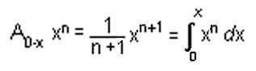
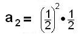

<html>

<head>
<meta http-equiv="Content-Language" content="en-us">
<meta http-equiv="Content-Type" content="text/html; charset=windows-1252">
<meta name="GENERATOR" content="Microsoft FrontPage 4.0">
<meta name="ProgId" content="FrontPage.Editor.Document">
<title>The Integral</title>
</head>

<body>

<p class=12pthelvetica align="center"><font color="#800080" size="5"><b style="mso-bidi-font-weight: normal">The
I</b><b style='mso-bidi-font-weight:normal'>ntegral/chapter 13</b></font></p>

<p class=12pthelvetica align="center">&nbsp;</p>

<p class=12pthelvetica align="left"><b><font size="4">1. Area on the geoboard</font></b><br>
<br>
I start young people working on a geoboard. The geoboard I use is 1/2&quot;
plywood with a 5 by 5 square array of nails, about 2&quot; apart with about
1&quot; edge. I also have &quot;spotty&quot; paper, with dots the same distance
apart as the geoboard so that my younger students can draw the shapes. I also
have 1/2&quot; spotty paper for the older students.<br>
If it takes 1 can of paint to paint inside the square (figure A), how many cans
of paint does it take to fill in figures B, C, and D?<br>
There are many investigations one can get into: Make some shapes and find how
many cans of paint it takes to paint inside them (in other words, find the area
within each figure).<br>
How many segments can you make on this 5x5 geoboard?<br>
How many squares can you make on this 5x5 geoboard (no diagonal sides)?<br>
What is the area of each triangle below?<br>
&nbsp;&nbsp;&nbsp;&nbsp;&nbsp;&nbsp;&nbsp;&nbsp;&nbsp;&nbsp;&nbsp;&nbsp;&nbsp;&nbsp;&nbsp;&nbsp;&nbsp;&nbsp;&nbsp;&nbsp;&nbsp;&nbsp;&nbsp;&nbsp;&nbsp;&nbsp;&nbsp;&nbsp;&nbsp;&nbsp;&nbsp;&nbsp;&nbsp;&nbsp;&nbsp;&nbsp;&nbsp;&nbsp;&nbsp;&nbsp;&nbsp;&nbsp;&nbsp;&nbsp;&nbsp;&nbsp;
</p>

<p class=12pthelvetica align="left">You make up questions.<hr>

<p class=12pthelvetica align="left"><b><font size="4">2. See</font></b> <a href="katysine.html">Katy's work
finding the area under a sine wave from 0 to <b><font face="Mathematica1Mono" size="4">p&nbsp;</font></b></a><b><font face="Mathematica1Mono" size="4">
</font></b><b><font face="Mathematica1Mono" size="3">(</font></b><font face="Arial" size="3">In
his books,<b> </b></font><font face="Arial" size="3">Don finds the area of a
parabolic segment to find the area under a parabola, after Archimedes)</font><hr>

<p class=12pthelvetica align="left"><b><font size="4">3. See</font></b>  <a href="areaundercurves.html">Don's
program to plot points on a calculator and find the area under curves</a><hr>

<p align="left"><b><font size="4" color="#000000">4. Finding the area under curves
on 1/10&quot; graph paper- and&nbsp; seeing patterns to learn new things!</font></b></p>
<p align="center"><b><font size="3" face="Arial" color="#000000"><span class="Apple-style-span" style="border-collapse: separate; font-style: normal; font-variant: normal; letter-spacing: normal; line-height: normal; orphans: 2; text-align: auto; text-indent: 0px; text-transform: none; white-space: normal; widows: 2; word-spacing: 0px; -webkit-border-horizontal-spacing: 0px; -webkit-border-vertical-spacing: 0px; -webkit-text-decorations-in-effect: none; -webkit-text-size-adjust: auto; -webkit-text-stroke-width: 0px">On
August 28<font lang="0" family="SANSSERIF">, 2001</font></span></font></b><span class="Apple-style-span" style="color: rgb(0, 128, 0); border-collapse: separate; font-family: Times New Roman; font-size: medium; font-style: normal; font-variant: normal; font-weight: normal; letter-spacing: normal; line-height: normal; orphans: 2; text-align: auto; text-indent: 0px; text-transform: none; white-space: normal; widows: 2; word-spacing: 0px; -webkit-border-horizontal-spacing: 0px; -webkit-border-vertical-spacing: 0px; -webkit-text-decorations-in-effect: none; -webkit-text-size-adjust: auto; -webkit-text-stroke-width: 0px"><font color="#008000" lang="0" family="SANSSERIF" face="Arial" size="3"><span class="Apple-converted-space">&nbsp;</span><b>Don
started working with<span class="Apple-converted-space">&nbsp;</span></b></font><b><font color="#008000" lang="0" family="SANSSERIF" face="Arial" size="3">Grace,</font><font color="#FF00FF" lang="0" family="SANSSERIF" face="Arial" size="3"><span class="Apple-converted-space">&nbsp;</span></font><font color="#008000" lang="0" family="SANSSERIF" face="Arial" size="3">a
6th grader in Chicago, in his</font></b><font color="#FF00FF" lang="0" family="SANSSERIF" face="Arial" size="3"><span class="Apple-converted-space">&nbsp;</span></font><b><font color="#008000" lang="0" family="SANSSERIF" size="3" face="Arial">Math
By Mail/Email program.<font color="#008000"><span style="font-size:12.0pt;font-family:Arial;mso-fareast-font-family:
&quot;Times New Roman&quot;;mso-bidi-font-family:&quot;Times New Roman&quot;;mso-ansi-language:
EN-US;mso-fareast-language:EN-US;mso-bidi-language:AR-SA"><font size="3" face="Arial"><font color="#008000" lang="0" family="SANSSERIF">
On </font><font color="#000000" lang="0" family="SANSSERIF">September 22, 2001</font><font lang="0" family="SANSSERIF">, </font></font><font color="#008000" lang="0" family="SANSSERIF"><span style="font-family: Arial; mso-fareast-font-family: Times New Roman; mso-bidi-font-family: Times New Roman; mso-ansi-language: EN-US; mso-fareast-language: EN-US; mso-bidi-language: AR-SA">
Grace's parents</span></font></span></font></font></b></span><b><font color="#008000" lang="0" family="SANSSERIF" size="3" face="Arial"><font color="#008000"><span style="font-family: Times New Roman; mso-fareast-font-family: Times New Roman; mso-bidi-font-family: Times New Roman; mso-ansi-language: EN-US; mso-fareast-language: EN-US; mso-bidi-language: AR-SA; font-size: medium; color: rgb(0, 128, 0); border-collapse: separate; font-style: normal; font-variant: normal; font-weight: normal; letter-spacing: normal; line-height: normal; orphans: 2; text-align: auto; text-indent: 0px; text-transform: none; white-space: normal; widows: 2; word-spacing: 0px; -webkit-border-horizontal-spacing: 0px; -webkit-border-vertical-spacing: 0px; -webkit-text-decorations-in-effect: none; -webkit-text-size-adjust: auto; -webkit-text-stroke-width: 0px" class="Apple-style-span"><font color="#008000" lang="0" family="SANSSERIF">
</font></span></font><font color="#008000" lang="0" family="SANSSERIF" size="3"><span style="mso-fareast-font-family: Times New Roman; mso-bidi-font-family: Times New Roman; mso-ansi-language: EN-US; mso-fareast-language: EN-US; mso-bidi-language: AR-SA; font-size: medium; color: rgb(0, 128, 0); border-collapse: separate; font-style: normal; font-variant: normal; font-weight: normal; letter-spacing: normal; line-height: normal; orphans: 2; text-align: auto; text-indent: 0px; text-transform: none; white-space: normal; widows: 2; word-spacing: 0px; -webkit-border-horizontal-spacing: 0px; -webkit-border-vertical-spacing: 0px; -webkit-text-decorations-in-effect: none; -webkit-text-size-adjust: auto; -webkit-text-stroke-width: 0px">brought
</span></font><span style="color: rgb(0, 128, 0); border-collapse: separate; font-size: medium; font-style: normal; font-variant: normal; font-weight: normal; letter-spacing: normal; line-height: normal; orphans: 2; text-align: auto; text-indent: 0px; text-transform: none; white-space: normal; widows: 2; word-spacing: 0px; -webkit-border-horizontal-spacing: 0px; -webkit-border-vertical-spacing: 0px; -webkit-text-decorations-in-effect: none; -webkit-text-size-adjust: auto; -webkit-text-stroke-width: 0px; mso-fareast-font-family: Times New Roman; mso-bidi-font-family: Times New Roman; mso-ansi-language: EN-US; mso-fareast-language: EN-US; mso-bidi-language: AR-SA"><font lang="0" family="SANSSERIF">Grace and her two brothers
to Champaign to work with Don. <span style="mso-fareast-font-family: Times New Roman; mso-bidi-font-family: Times New Roman; mso-ansi-language: EN-US; mso-fareast-language: EN-US; mso-bidi-language: AR-SA">On
Sunday</span></font></span></font><font color="#008000" lang="0" family="SANSSERIF" size="3" face="Arial"><font face="Arial" size="3"><span class="Apple-style-span" style="color: rgb(0, 128, 0); border-collapse: separate; font-family: Times New Roman; font-size: medium; font-style: normal; font-variant: normal; font-weight: normal; letter-spacing: normal; line-height: normal; orphans: 2; text-align: auto; text-indent: 0px; text-transform: none; white-space: normal; widows: 2; word-spacing: 0px; -webkit-border-horizontal-spacing: 0px; -webkit-border-vertical-spacing: 0px; -webkit-text-decorations-in-effect: none; -webkit-text-size-adjust: auto; -webkit-text-stroke-width: 0px"><font lang="0" family="SANSSERIF">, </font></span></font></font></b><font lang="0" family="SANSSERIF" face="Arial" size="3"><span style="border-collapse: separate; font-style: normal; font-variant: normal; letter-spacing: normal; line-height: normal; orphans: 2; text-align: auto; text-indent: 0px; text-transform: none; white-space: normal; widows: 2; word-spacing: 0px; -webkit-border-horizontal-spacing: 0px; -webkit-border-vertical-spacing: 0px; -webkit-text-decorations-in-effect: none; -webkit-text-size-adjust: auto; -webkit-text-stroke-width: 0px; mso-fareast-font-family: Times New Roman; mso-bidi-font-family: Times New Roman; mso-ansi-language: EN-US; mso-fareast-language: EN-US; mso-bidi-language: AR-SA" class="Apple-style-span"><b>Dec.
2<span style="border-collapse: separate; font-style: normal; font-variant: normal; letter-spacing: normal; line-height: normal; orphans: 2; text-align: auto; text-indent: 0px; text-transform: none; white-space: normal; widows: 2; word-spacing: 0px; -webkit-border-horizontal-spacing: 0px; -webkit-border-vertical-spacing: 0px; -webkit-text-decorations-in-effect: none; -webkit-text-size-adjust: auto; -webkit-text-stroke-width: 0px; mso-fareast-font-family: Times New Roman; mso-bidi-font-family: Times New Roman; mso-ansi-language: EN-US; mso-fareast-language: EN-US; mso-bidi-language: AR-SA">, 2001</span></b></span></font><font color="#008000" lang="0" family="SANSSERIF" size="3" face="Arial"><b><font color="#008000" lang="0" family="SANSSERIF"><span class="Apple-style-span" style="color: rgb(0, 128, 0); border-collapse: separate; font-size: medium; font-style: normal; font-variant: normal; font-weight: normal; letter-spacing: normal; line-height: normal; orphans: 2; text-align: auto; text-indent: 0px; text-transform: none; white-space: normal; widows: 2; word-spacing: 0px; -webkit-border-horizontal-spacing: 0px; -webkit-border-vertical-spacing: 0px; -webkit-text-decorations-in-effect: none; -webkit-text-size-adjust: auto; -webkit-text-stroke-width: 0px; mso-fareast-font-family: Times New Roman; mso-bidi-font-family: Times New Roman; mso-ansi-language: EN-US; mso-fareast-language: EN-US; mso-bidi-language: AR-SA">,
</span></font><span class="Apple-style-span" style="color: rgb(0, 128, 0); border-collapse: separate; font-style: normal; font-variant: normal; font-weight: normal; letter-spacing: normal; line-height: normal; orphans: 2; text-align: auto; text-indent: 0px; text-transform: none; white-space: normal; widows: 2; word-spacing: 0px; -webkit-border-horizontal-spacing: 0px; -webkit-border-vertical-spacing: 0px; -webkit-text-decorations-in-effect: none; -webkit-text-size-adjust: auto; -webkit-text-stroke-width: 0px; mso-fareast-font-family: Times New Roman; mso-bidi-font-family: Times New Roman; mso-ansi-language: EN-US; mso-fareast-language: EN-US; mso-bidi-language: AR-SA"><font color="#008000">
Grace's parents brought the 3 children back to Champaign to work with
Don! Grace has continued to work with Don through</font><font color="#FF00FF" lang="0" family="SANSSERIF">
</font></span></b></font><b><font lang="0" family="SANSSERIF" size="3" face="Arial"><font family="SANSSERIF"><span class="Apple-style-span" style="border-collapse: separate; font-style: normal; font-variant: normal; letter-spacing: normal; line-height: normal; orphans: 2; text-align: auto; text-indent: 0px; text-transform: none; white-space: normal; widows: 2; word-spacing: 0px; -webkit-border-horizontal-spacing: 0px; -webkit-border-vertical-spacing: 0px; -webkit-text-decorations-in-effect: none; -webkit-text-size-adjust: auto; -webkit-text-stroke-width: 0px; mso-fareast-font-family: Times New Roman; mso-bidi-font-family: Times New Roman; mso-ansi-language: EN-US; mso-fareast-language: EN-US; mso-bidi-language: AR-SA">February, 2002</span></font><span class="Apple-style-span" style="border-collapse: separate; font-style: normal; font-variant: normal; letter-spacing: normal; line-height: normal; orphans: 2; text-align: auto; text-indent: 0px; text-transform: none; white-space: normal; widows: 2; word-spacing: 0px; -webkit-border-horizontal-spacing: 0px; -webkit-border-vertical-spacing: 0px; -webkit-text-decorations-in-effect: none; -webkit-text-size-adjust: auto; -webkit-text-stroke-width: 0px; mso-fareast-font-family: Times New Roman; mso-bidi-font-family: Times New Roman; mso-ansi-language: EN-US; mso-fareast-language: EN-US; mso-bidi-language: AR-SA">.</span></font></b></p>
<p>
<b><span class="Apple-style-span" style="color: rgb(0, 128, 0); border-collapse: separate; font-family: Times New Roman; font-size: medium; font-style: normal; font-variant: normal; font-weight: normal; letter-spacing: normal; line-height: normal; orphans: 2; text-align: auto; text-indent: 0px; text-transform: none; white-space: normal; widows: 2; word-spacing: 0px; -webkit-border-horizontal-spacing: 0px; -webkit-border-vertical-spacing: 0px; -webkit-text-decorations-in-effect: none; -webkit-text-size-adjust: auto; -webkit-text-stroke-width: 0px"><font color="#008000" lang="0" family="SANSSERIF" size="3" face="Arial">
&nbsp;&nbsp;&nbsp;&nbsp;&nbsp;&nbsp;&nbsp;&nbsp;&nbsp;&nbsp;&nbsp;&nbsp;&nbsp;&nbsp;&nbsp;&nbsp;&nbsp;&nbsp;&nbsp;&nbsp;&nbsp;&nbsp;&nbsp;&nbsp;&nbsp;&nbsp;&nbsp;&nbsp;&nbsp;&nbsp;&nbsp;&nbsp;&nbsp;&nbsp;&nbsp;&nbsp;&nbsp;&nbsp;
&nbsp;&nbsp;&nbsp;&nbsp;&nbsp;&nbsp;&nbsp;&nbsp;&nbsp;&nbsp;&nbsp;&nbsp;
&nbsp;&nbsp;
</font></span></b>
</p>
<p align="left"><font lang="0" family="SANSSERIF" face="Arial" size="4"><b><span style="border-collapse: separate; font-style: normal; letter-spacing: normal; line-height: normal; orphans: 2; text-align: auto; text-indent: 0px; text-transform: none; white-space: normal; widows: 2; word-spacing: 0px; -webkit-border-horizontal-spacing: 0px; -webkit-border-vertical-spacing: 0px; -webkit-text-decorations-in-effect: none; -webkit-text-size-adjust: auto; -webkit-text-stroke-width: 0px" class="Apple-style-span">In<span style="border-collapse: separate; font-style: normal; letter-spacing: normal; line-height: normal; orphans: 2; text-align: auto; text-indent: 0px; text-transform: none; white-space: normal; widows: 2; word-spacing: 0px; -webkit-border-horizontal-spacing: 0px; -webkit-border-vertical-spacing: 0px; -webkit-text-decorations-in-effect: none; -webkit-text-size-adjust: auto; -webkit-text-stroke-width: 0px">
November 2001</span></span></b></font><font face="Arial"><b><font color="#008000" lang="0" family="SANSSERIF" size="3"><span class="Apple-style-span" style="color: rgb(0, 128, 0); border-collapse: separate; font-size: medium; font-style: normal; font-variant: normal; font-weight: normal; letter-spacing: normal; line-height: normal; orphans: 2; text-align: auto; text-indent: 0px; text-transform: none; white-space: normal; widows: 2; word-spacing: 0px; -webkit-border-horizontal-spacing: 0px; -webkit-border-vertical-spacing: 0px; -webkit-text-decorations-in-effect: none; -webkit-text-size-adjust: auto; -webkit-text-stroke-width: 0px">
</span></font></b><b><span class="Apple-style-span" style="color: rgb(0, 128, 0); border-collapse: separate; font-size: medium; font-style: normal; font-variant: normal; letter-spacing: normal; line-height: normal; orphans: 2; text-align: auto; text-indent: 0px; text-transform: none; white-space: normal; widows: 2; word-spacing: 0px; -webkit-border-horizontal-spacing: 0px; -webkit-border-vertical-spacing: 0px; -webkit-text-decorations-in-effect: none; -webkit-text-size-adjust: auto; -webkit-text-stroke-width: 0px"><font color="#008000" lang="0" family="SANSSERIF" size="3">Grace started work on on the area under curves on p. 245 in Don's worksheet book. He
suggested she count the squares under the parabola y = x<font size="1"><sup>2&nbsp;</sup></font></font><font size="1" color="#008000" lang="0" family="SANSSERIF"><sup>
</sup></font><font color="#008000" lang="0" family="SANSSERIF" size="3"><font size="3">from
x = 0 to x = 1, (on the left above), then find the ratio of the number of squares under the curve to
the number of squares in the 1x1 square. </font>Grace found the
number of squares to be about 34, so the area under the curve was 34/100. When Don asked her
what simple fraction was this close to, she said 1/3. Don had Grace write
&quot;the area under the curve y = x<font size="1"><sup>2&nbsp; </sup></font><font size="3">from
x = 0 to x = 1</font>&quot;<font size="1"><sup> </sup></font>as </font></span><span class="Apple-style-span" style="border-collapse: separate; font-size: medium; font-style: normal; font-variant: normal; letter-spacing: normal; line-height: normal; orphans: 2; text-align: auto; text-indent: 0px; text-transform: none; white-space: normal; widows: 2; word-spacing: 0px; -webkit-border-horizontal-spacing: 0px; -webkit-border-vertical-spacing: 0px; -webkit-text-decorations-in-effect: none; -webkit-text-size-adjust: auto; -webkit-text-stroke-width: 0px"><font color="#FF0000" lang="0" family="SANSSERIF" size="3"> A<font size="2"><sub>0-1</sub></font><sub>
</sub>x<font size="1"><sup>2 </sup></font>=</font></span><font color="#008000" lang="0" family="SANSSERIF" size="3"><span class="Apple-style-span" style="color: rgb(0, 128, 0); border-collapse: separate; font-size: medium; font-style: normal; font-variant: normal; letter-spacing: normal; line-height: normal; orphans: 2; text-align: auto; text-indent: 0px; text-transform: none; white-space: normal; widows: 2; word-spacing: 0px; -webkit-border-horizontal-spacing: 0px; -webkit-border-vertical-spacing: 0px; -webkit-text-decorations-in-effect: none; -webkit-text-size-adjust: auto; -webkit-text-stroke-width: 0px"> </span><span class="Apple-style-span" style="color: rgb(0, 128, 0); border-collapse: separate; font-style: normal; font-variant: normal; letter-spacing: normal; line-height: normal; orphans: 2; text-align: auto; text-indent: 0px; text-transform: none; white-space: normal; widows: 2; word-spacing: 0px; -webkit-border-horizontal-spacing: 0px; -webkit-border-vertical-spacing: 0px; -webkit-text-decorations-in-effect: none; -webkit-text-size-adjust: auto; -webkit-text-stroke-width: 0px">.
It would be easy to write 1 for 1*1<sup>2 </sup>or 1<sup>3</sup> ,&nbsp; but the
square is 1 by 1<sup>2&nbsp; </sup>=<sup> </sup>1<sup>3 </sup>and writing it
this way will show the pattern that follows. In his college math classes, Don
was often confused by the NOTATION used, which kept him from really
understanding the mathematical ideas.</span></font></b></font></p>
<p align="left"><font color="#008000" size="3"><b>Grace counted the squares for the area from x = 0
to x = 2, above right. She found the area to be about 1/3 of the total area
(2x4). So the area under the curve y = x<sup>2</sup> from
x = 0 to x = 2 is A<sub>0-2</sub>&nbsp; x<sup>2</sup> = .
Looking at what she had up to that point,</b></font></p>
<b><span class="Apple-style-span" style="color: rgb(0, 128, 0); border-collapse: separate; font-family: Times New Roman; font-size: medium; font-style: normal; font-variant: normal; font-weight: normal; letter-spacing: normal; line-height: normal; orphans: 2; text-align: auto; text-indent: 0px; text-transform: none; white-space: normal; widows: 2; word-spacing: 0px; -webkit-border-horizontal-spacing: 0px; -webkit-border-vertical-spacing: 0px; -webkit-text-decorations-in-effect: none; -webkit-text-size-adjust: auto; -webkit-text-stroke-width: 0px"><font color="#008000" lang="0" family="SANSSERIF" size="3" face="Arial">
<p align="center"></p>
<br>
</font></span></b><font color="#008000"><b>
Don asked Grace what she would get for A<font size="2"><sub>0-3</sub></font>&nbsp;
x<font size="2"><sup>2</sup></font>&nbsp; ? She immediately said
it would be</b></font>
<p><font color="#008000"><b>&nbsp; and for the
area under the curve&nbsp; y = x<font size="2"><sup>2</sup></font>&nbsp; from
x = 0 to x = x,&nbsp; she predicted correctly, .
WOW!! The power of patterns!&nbsp;</b></font></p>
<p><font color="#008000"><b> Then Don asked Grace to draw the line y = x and
tell him what the area under it would be from x=0 to x= 1, then 2, then
generalize to 0 to x. She sent Don the graph below as an attached file:</b></font></p>
<b><span class="Apple-style-span" style="color: rgb(0, 128, 0); border-collapse: separate; font-family: Times New Roman; font-size: medium; font-style: normal; font-variant: normal; font-weight: normal; letter-spacing: normal; line-height: normal; orphans: 2; text-align: auto; text-indent: 0px; text-transform: none; white-space: normal; widows: 2; word-spacing: 0px; -webkit-border-horizontal-spacing: 0px; -webkit-border-vertical-spacing: 0px; -webkit-text-decorations-in-effect: none; -webkit-text-size-adjust: auto; -webkit-text-stroke-width: 0px"><font color="#008000" lang="0" family="SANSSERIF" size="3" face="Arial">
<p align="center"></p>
</font></span></b>
<p align="left"><b><font color="#008000">And she was able to generalize the area under the
&quot;curve&quot;&nbsp; y = x from x=0 to x=x, as&nbsp; .
Looking at what she had, she was able to generalize for any function x<font size="2"><sup>n</sup></font>&nbsp;
, the area under the curve from x=0 to x=x would be&nbsp; .&nbsp;
Using this, Don asked Grace to do the problems on p. 246 of his worksheet book. A
few days later Grace sent Don the following work as an attached file:</font></b></p>
<b><span class="Apple-style-span" style="color: rgb(0, 128, 0); border-collapse: separate; font-family: Times New Roman; font-size: medium; font-style: normal; font-variant: normal; font-weight: normal; letter-spacing: normal; line-height: normal; orphans: 2; text-align: auto; text-indent: 0px; text-transform: none; white-space: normal; widows: 2; word-spacing: 0px; -webkit-border-horizontal-spacing: 0px; -webkit-border-vertical-spacing: 0px; -webkit-text-decorations-in-effect: none; -webkit-text-size-adjust: auto; -webkit-text-stroke-width: 0px"><font color="#008000" lang="0" family="SANSSERIF" size="3" face="Arial">
<p align="center"></p>
</font></span></b>
<p align="left"><font color="#008000"><b>There were mistakes above, in #1, 2, 6, 11 and 12. Don sent the
following to Grace to show her that the area under y = 4 is&nbsp; A<font size="2"><sub>0-x</sub></font>&nbsp;
4 = 4x</b></font></p>
<font color="#008000" lang="0" family="SANSSERIF" size="3" face="Arial"><span class="Apple-style-span" style="color: rgb(0, 128, 0); border-collapse: separate; font-family: Times New Roman; font-size: medium; font-style: normal; font-variant: normal; font-weight: normal; letter-spacing: normal; line-height: normal; orphans: 2; text-align: auto; text-indent: 0px; text-transform: none; white-space: normal; widows: 2; word-spacing: 0px; -webkit-border-horizontal-spacing: 0px; -webkit-border-vertical-spacing: 0px; -webkit-text-decorations-in-effect: none; -webkit-text-size-adjust: auto; -webkit-text-stroke-width: 0px"><b>
<p align="center"></p>
</b></span></font>
<p align="left"><b><font color="#008000" lang="0" family="SANSSERIF" size="3" face="Arial"><span class="Apple-style-span" style="color: rgb(0, 128, 0); border-collapse: separate; font-style: normal; font-variant: normal; letter-spacing: normal; line-height: normal; orphans: 2; text-align: auto; text-indent: 0px; text-transform: none; white-space: normal; widows: 2; word-spacing: 0px; -webkit-border-horizontal-spacing: 0px; -webkit-border-vertical-spacing: 0px; -webkit-text-decorations-in-effect: none; -webkit-text-size-adjust: auto; -webkit-text-stroke-width: 0px">Don also sent the work below:</span></font></b></p>
<b><span class="Apple-style-span" style="color: rgb(0, 128, 0); border-collapse: separate; font-family: Times New Roman; font-size: medium; font-style: normal; font-variant: normal; font-weight: normal; letter-spacing: normal; line-height: normal; orphans: 2; text-align: auto; text-indent: 0px; text-transform: none; white-space: normal; widows: 2; word-spacing: 0px; -webkit-border-horizontal-spacing: 0px; -webkit-border-vertical-spacing: 0px; -webkit-text-decorations-in-effect: none; -webkit-text-size-adjust: auto; -webkit-text-stroke-width: 0px"><font color="#008000" lang="0" family="SANSSERIF" size="3" face="Arial">
<p align="center"></p>
</font></span></b>
<p align="left"><span class="Apple-style-span" style="border-collapse: separate; font-style: normal; font-variant: normal; letter-spacing: normal; line-height: normal; orphans: 2; text-align: auto; text-indent: 0px; text-transform: none; white-space: normal; widows: 2; word-spacing: 0px; -webkit-border-horizontal-spacing: 0px; -webkit-border-vertical-spacing: 0px; -webkit-text-decorations-in-effect: none; -webkit-text-size-adjust: auto; -webkit-text-stroke-width: 0px"><b><font color="#008000" lang="0" family="SANSSERIF" size="3" face="Arial">They talked about the problems she had
wrong on p.246, that of finding the area under a constant like k, which is kx</font><font lang="0" family="SANSSERIF" face="Arial" size="2" color="#008000"><sup>0</sup></font><font color="#008000" lang="0" family="SANSSERIF" size="3" face="Arial">.
So A</font><font color="#008000" lang="0" family="SANSSERIF" face="Arial" size="1"><sub>0</sub></font><font color="#008000" lang="0" family="SANSSERIF" face="Arial" size="2"><sub>-x</sub></font></b><font lang="0" family="SANSSERIF" face="Arial" size="3" color="#008000">
</font><b><font color="#008000" lang="0" family="SANSSERIF" size="3" face="Arial">kx</font><font lang="0" family="SANSSERIF" face="Arial" size="2" color="#008000"><sup>0</sup></font></b></span><span class="Apple-style-span" style="border-collapse: separate; font-style: normal; font-variant: normal; letter-spacing: normal; line-height: normal; orphans: 2; text-align: auto; text-indent: 0px; text-transform: none; white-space: normal; widows: 2; word-spacing: 0px; -webkit-border-horizontal-spacing: 0px; -webkit-border-vertical-spacing: 0px; -webkit-text-decorations-in-effect: none; -webkit-text-size-adjust: auto; -webkit-text-stroke-width: 0px"><font color="#008000" lang="0" family="SANSSERIF" size="3" face="Arial"><span style="border-collapse: separate; font-style: normal; font-variant: normal; letter-spacing: normal; line-height: normal; orphans: 2; text-align: auto; text-indent: 0px; text-transform: none; white-space: normal; widows: 2; word-spacing: 0px; -webkit-border-horizontal-spacing: 0px; -webkit-border-vertical-spacing: 0px; -webkit-text-decorations-in-effect: none; -webkit-text-size-adjust: auto; -webkit-text-stroke-width: 0px">=
<b>kx.</b></span></font></span></p>
<p align="left"><b>Grace sent her corrected versions of the problems on p. 246</b>:</p>
<p align="center"></p>
<p align="left"><b><span style="font-family: Arial; mso-fareast-font-family: Times New Roman; mso-bidi-font-family: Times New Roman; mso-ansi-language: EN-US; mso-fareast-language: EN-US; mso-bidi-language: AR-SA"><font size="4">On
Sunday, Dec.2, '01 when the family returned to Champaign, Don gave Grace this
test to work on:</font></span></b></p>
<p align="center"></p>
<p align="left">Grace finished her test at home and sent these answers to Don:</p>
<p align="center"></p>
<p align="left">Grace is one of only a few students over the years who were able
to do #4 &amp; #5 above. Can you figure out why one needs to subtract 1 in the
denominator?</p>
<p><b>Dec. 26, 2001 Grace sent the following scan to Don</b></p>
<p align="center"></p>
<p><span style="font-family:Arial">which is what they did at Don's house. This
shows how they got the answers to problem #1 (8/3) and #2 above (8/3 + 1/3= 9/3).
</span></p>
<p align="left"><b><font color="#008000" lang="0" family="SANSSERIF" size="3" face="Arial"><span class="Apple-style-span" style="border-collapse: separate; font-style: normal; font-variant: normal; letter-spacing: normal; line-height: normal; orphans: 2; text-align: auto; text-indent: 0px; text-transform: none; white-space: normal; widows: 2; word-spacing: 0px; -webkit-border-horizontal-spacing: 0px; -webkit-border-vertical-spacing: 0px; -webkit-text-decorations-in-effect: none; -webkit-text-size-adjust: auto; -webkit-text-stroke-width: 0px">Don showed Grace the following was his notation and the
&quot;normal&quot; calculus notation where dx is the width of the rectangles
shown below:</span></font></b></p>
<b><font color="#008000" lang="0" family="SANSSERIF" size="3" face="Arial"><span class="Apple-style-span" style="color: rgb(0, 128, 0); border-collapse: separate; font-family: Times New Roman; font-size: medium; font-style: normal; font-variant: normal; font-weight: normal; letter-spacing: normal; line-height: normal; orphans: 2; text-align: auto; text-indent: 0px; text-transform: none; white-space: normal; widows: 2; word-spacing: 0px; -webkit-border-horizontal-spacing: 0px; -webkit-border-vertical-spacing: 0px; -webkit-text-decorations-in-effect: none; -webkit-text-size-adjust: auto; -webkit-text-stroke-width: 0px">
<p align="center"><span style="mso-text-raise:-18.0pt"><!--[if gte vml 1]><v:shapetype
 id="_x0000_t75" coordsize="21600,21600" o:spt="75" o:preferrelative="t"
 path="m@4@5l@4@11@9@11@9@5xe" filled="f" stroked="f">
 <v:stroke joinstyle="miter"/>
 <v:formulas>
  <v:f eqn="if lineDrawn pixelLineWidth 0"/>
  <v:f eqn="sum @0 1 0"/>
  <v:f eqn="sum 0 0 @1"/>
  <v:f eqn="prod @2 1 2"/>
  <v:f eqn="prod @3 21600 pixelWidth"/>
  <v:f eqn="prod @3 21600 pixelHeight"/>
  <v:f eqn="sum @0 0 1"/>
  <v:f eqn="prod @6 1 2"/>
  <v:f eqn="prod @7 21600 pixelWidth"/>
  <v:f eqn="sum @8 21600 0"/>
  <v:f eqn="prod @7 21600 pixelHeight"/>
  <v:f eqn="sum @10 21600 0"/>
 </v:formulas>
 <v:path o:extrusionok="f" gradientshapeok="t" o:connecttype="rect"/>
 <o:lock v:ext="edit" aspectratio="t"/>
</v:shapetype><v:shape id="_x0000_i1025" type="#_x0000_t75" style='width:170.25pt;
 height:41.25pt' o:ole="">
 <v:imagedata src="../../../../../../DOCUME~1/mathman/LOCALS~1/Temp/msoclip1/01/clip_image001.wmz"
  o:title=""/>
</v:shape><![endif]-->
 </span><!--[if gte mso 9]><xml>
 <o:OLEObject Type="Embed" ProgID="Equation.DSMT4" ShapeID="_x0000_i1025"
  DrawAspect="Content" ObjectID="_1067877942">
 </o:OLEObject>
</xml><![endif]-->
 </p>
</span></font></b>
<p align="left">In March 2002, see what Grace writes (unsolicited) <a href="/html/graceteaching.html">about
teaching</a> !<hr>

<p class=12pthelvetica>As a teacher I need to try new things, do mathematics
myself, and look for ways to get my students into more difficult concepts, but
at their level. I treat each student as an individual; I do different things
with different students. And I don't wait until I completely understand
everything about an idea (which I don't think is possible anyway) before I'll get a student doing it-- that way I learn
things along with my students. It's also why I encourage them to do things
different ways. It makes teaching and learning enjoyable.<hr>

<p class=12pthelvetica align="left"><b><font size="4" color="#000000">5. Area under curves using rectangles</font></b></p>

<p class="12pthelvetica">Now comes a <b style="mso-bidi-font-weight:normal">new
problem</b>, that is, the curve is the same, but the method of finding the area
under it, is different. Find the area under the curve <span style="font-size:
14.0pt;mso-bidi-font-size:10.0pt">y </span>= <span style="font-size:14.0pt;
mso-bidi-font-size:10.0pt">x</span><sup><span style="font-size:10.0pt;
position:relative;top:-2.0pt;mso-text-raise:2.0pt">2</span></sup><span style="mso-spacerun:yes">&nbsp;</span>(the
dark area below), from <span style="font-size:14.0pt;mso-bidi-font-size:10.0pt">x</span>
= 0 to <b style="mso-bidi-font-weight:normal">1</b>. This time we'll make
rectangles (hatched),<b style="mso-bidi-font-weight:normal"> </b>then find the
area of these, get a sequence of partial sums <font color="#FF0000"><b>as we
make the width of the rectangles smaller</b></font>, then we'll find the limit
of this sequence, which will be the area we want. <b>The area of the hatched
rectangles will approach the area under the curve</b>. We'll start with a<sub><span style="font-size:10.0pt">1<span style="mso-spacerun:yes">&nbsp;
</span></span></sub>and a<sub><span style="font-size:10.0pt">2 </span></sub><span style="mso-spacerun: yes; font-size: 9.0pt; mso-bidi-font-size: 10.0pt">&nbsp;</span>below.
Notice that the height of the rectangles are square numbers because the curve is
<b style="mso-bidi-font-weight:normal">y<span style="mso-spacerun:yes"> </span></b>=<b style="mso-bidi-font-weight:normal">
</b><span style="font-size:14.0pt;mso-bidi-font-size:10.0pt">x</span><sup><span style="font-size:10.0pt;position:relative;top:-2.0pt;mso-text-raise:2.0pt">2</span></sup>.
The hatched rectangles will have an area of the height times the width.</p>

<p class=12pthelvetica align="center"></p>

<p class=12pthelvetica align="center"><font size="3">&nbsp;&nbsp; </font>a<sub><font size="2">1</font></sub><font size="3">
=
0&nbsp;&nbsp;&nbsp;&nbsp;&nbsp;&nbsp;&nbsp;&nbsp;&nbsp;&nbsp;&nbsp;&nbsp;&nbsp;&nbsp;&nbsp;&nbsp;&nbsp;&nbsp;&nbsp;&nbsp;&nbsp;&nbsp;&nbsp;&nbsp;&nbsp;&nbsp;&nbsp;&nbsp;&nbsp;&nbsp;&nbsp;
&nbsp;&nbsp;&nbsp;&nbsp;&nbsp;</font></p>

<p class=12pthelvetica align="center">&nbsp;</p>

<p class=12pthelvetica align="center"></p>

<p class=12pthelvetica align="left">&nbsp;&nbsp;&nbsp;&nbsp;&nbsp;&nbsp;&nbsp;&nbsp;&nbsp;&nbsp;&nbsp;&nbsp;&nbsp;&nbsp;&nbsp;&nbsp;&nbsp;&nbsp;&nbsp;&nbsp;&nbsp;&nbsp;&nbsp;&nbsp;&nbsp;&nbsp;&nbsp;<font size="3">&nbsp;&nbsp;&nbsp;&nbsp;&nbsp;&nbsp;&nbsp;&nbsp;&nbsp;&nbsp;&nbsp;&nbsp;&nbsp;&nbsp;&nbsp;&nbsp;&nbsp;&nbsp;&nbsp;
</font></p>

<p class=12pthelvetica>&nbsp;&nbsp;&nbsp;&nbsp;<font size="3"> &nbsp; </font></p>

<p class=12pthelvetica><font size="3">&nbsp;&nbsp;&nbsp;&nbsp;&nbsp; </font>a<sub><font size="2">1</font></sub><font size="3">
= 0&nbsp;</font></p>

<p class=12pthelvetica><font size="3">&nbsp;&nbsp;&nbsp;&nbsp; &nbsp;</font></p>

<p class=12pthelvetica>&nbsp;&nbsp;&nbsp;&nbsp; </p>

<p class=12pthelvetica>&nbsp;&nbsp;&nbsp;&nbsp; </p>

<p class=12pthelvetica>&nbsp;&nbsp;&nbsp;&nbsp; </p>

<p class=12pthelvetica>&nbsp;&nbsp;&nbsp;&nbsp; </p>

<p class=12pthelvetica>&nbsp;&nbsp; &nbsp;&nbsp; 


<p class=12pthelvetica>In the<a href="sheripyrtocb.html"> Vol
of Pyramid/Vol of Cube&nbsp;</a> Don shows how he finds the sum of the first n
squares;</p>


<p class=12pthelvetica>the sum of the first n-1 squares is&nbsp; </p>


<p class=12pthelvetica></p>


<p class=12pthelvetica>The area under the curve y=x<b><font size="2"><sup>2</sup>
</font></b><font size="3">, from 0 to 1 is</font></p>


<p class=12pthelvetica>&nbsp;&nbsp;</p>


<p class=12pthelvetica>because as n-&gt; inf both the terms 1/2n and 1/6n<font size="2"><b><sup>2</sup>
</b>-&gt;0. </font><font size="3">The 1/3 is the same as Grace got</font></p>


<p class=12pthelvetica><font size="3">above.</font><font size="2">
</font><font size="3">Again writing this as&nbsp;&nbsp;&nbsp;&nbsp;&nbsp;&nbsp;&nbsp;&nbsp;&nbsp;&nbsp;&nbsp;&nbsp;&nbsp;&nbsp;&nbsp;
&nbsp;is
important because it shows</font></p>


<p class=12pthelvetica><font size="3">&nbsp;that the area&nbsp;is 1/3 of a</font> <font size="3">1x1</font><font size="2"><b><sup>2</sup></b></font><font size="3">
 rectangle, which is what Sean, Matt, and Grace got.</font></p>


<p class=12pthelvetica>&nbsp;</p>


<p class=12pthelvetica><font size="3">Could you find the area under </font>the
curve y=x<b><font size="2"><sup>2</sup> </font></b><font size="3">, from 0 to 2,
using the rectangles under the curve? Find a</font><font size="2"><b><sub>1</sub></b></font><font size="3">,
a</font><font size="2"><b><sub>2</sub></b></font><font size="3">, a</font><font size="2"><b><sub>3</sub></b></font><font size="3">,
and a</font><font size="2"><b><sub>4</sub></b></font><font size="3">, using the
diagrams below.&nbsp; a</font><font size="2"><b><sub>3</sub> </b></font><font size="3">is
given below the diagrams.</font></p>


<p class=12pthelvetica align="center"></p>


<p class=12pthelvetica>&nbsp;&nbsp;&nbsp;&nbsp;&nbsp;&nbsp;&nbsp;&nbsp;&nbsp;&nbsp;&nbsp;&nbsp;&nbsp;&nbsp;&nbsp;&nbsp;&nbsp;&nbsp;&nbsp;&nbsp;&nbsp;&nbsp;&nbsp;&nbsp;&nbsp;&nbsp;&nbsp;&nbsp;&nbsp;&nbsp;&nbsp;&nbsp;&nbsp;&nbsp;&nbsp;&nbsp;&nbsp;&nbsp;&nbsp;&nbsp;&nbsp;&nbsp;&nbsp;&nbsp;&nbsp;&nbsp;&nbsp;&nbsp;&nbsp;&nbsp;&nbsp;&nbsp;&nbsp;&nbsp;
</p>


<p class=12pthelvetica><font size="3">Generalize to a</font><font size="2"><b><sub>n</sub></b></font><font size="3">,
then find the limit of a</font><font size="2"><b><sub>n</sub></b></font><font size="3">
as n-&gt; infinity.</font></p>


<p class=12pthelvetica>&nbsp;</p>


<p class=12pthelvetica><font size="3">This becomes&nbsp;&nbsp; </font></p>


<p class=12pthelvetica>&nbsp;</p>


<p class=12pthelvetica>Can you now find the area under y=x<b><font size="2"><sup>2</sup> </font></b>
from 0-3, 0-4, 0-x?</p>


<p class=12pthelvetica>Now find the area, using rectangles, under the
curves&nbsp; <font size="3">x</font><b><font size="2"><sup>0</sup></font></b>, <font size="3">x</font><b><font size="2"><sup>1</sup>
,</font></b> <font size="3">x</font><b><font size="2"><sup>3</sup></font><sup><font size="2">
</font></sup><font size="2">. </font></b><font size="3">x</font><b><font size="2"><sup>4</sup></font><font size="2"><sup>
</sup>, .. </font></b><font size="3">x</font><sup><font size="2">n<b>&nbsp;</b></font></sup><font size="3">&nbsp;</font></p>
<table border="1" width="95%">
  <tr>
    <td width="53%">
      <p class="12pthelvetica">From what we've done so far, what do you think
      would be the area under the curve <font size="3">x</font><sup><font size="2">n</font></sup><b><font size="2"><sup>&nbsp;
</sup></font></b><font size="3">from x=a to x=b? </font></p>
      <p class="12pthelvetica"><font size="3">Just the difference between
the </font>areas under the curve</p>
      <p class="12pthelvetica"><font size="3">&nbsp;&nbsp;&nbsp;&nbsp;&nbsp;&nbsp;&nbsp;&nbsp;&nbsp;
      </font></p>
    </td>
    <td width="47%">&nbsp;&nbsp;&nbsp;&nbsp;&nbsp;&nbsp;&nbsp;&nbsp;&nbsp;&nbsp;&nbsp;
      </td>
  </tr>
</table>
<hr>


<p class=12pthelvetica><font size="4"><b>6. Two problems:</b></font><p class=12pthelvetica>&nbsp;&nbsp;&nbsp;<font size="4">
a. </font><font size="3">Find the area under x</font><font size="2"><b><sup>2</sup></b></font><font size="3">
from 0 to 1.</font><p class=12pthelvetica>&nbsp;&nbsp;&nbsp;<font size="3"> b.
Find the <font color="#FF0000">ratio</font> of the <font color="#800000"><b>volume
of a pyramid</b></font> </font><font size="5">/</font><font size="3"> <font color="#800000"><b>the
volume of a cube</b></font> with the same base and height</font><p class=12pthelvetica><font size="3">What
do you notice about the answers above?</font><hr>


<p class=12pthelvetica><font size="4"><b>7. a. <a href="logarithms.html">Logarithms</a>,
and&nbsp;</b></font></p>


<p class=12pthelvetica>&nbsp;&nbsp;&nbsp;<font size="4"><b> b. logs as area under
the curves 1/x and 1/(1+x), and as infinite series</b></font></p>


<hr>


At age 11,
Ian realized that he could go down, starting with <span style="font-size:
14.0pt;mso-bidi-font-size:10.0pt">y</span>= <span style="font-size:14.0pt;
mso-bidi-font-size:10.0pt;letter-spacing:.4pt">x</span><span style="font-size:11.0pt;mso-bidi-font-size:10.0pt;position:relative;top:-1.0pt;
mso-text-raise:1.0pt;letter-spacing:.4pt"><font size="2"><b><sup>4</sup></b></font></span><span style="mso-spacerun: yes; font-size: 10.0pt">&nbsp;</span>,
taking the derivative until he got 0, or go up, taking the integral! He used the following notation to show this:
<blockquote>
  <blockquote>
    <blockquote>
      <blockquote>
        <p class="12pthelvetica" align="left"><span style="font-size:14.0pt;mso-bidi-font-size:10.0pt">&nbsp;y
        </span><sup><span style="position:relative;top:-3.0pt;mso-text-raise:3.0pt">-</span><span style="font-size:10.0pt;position:relative;top:-2.0pt;mso-text-raise:2.0pt">2</span></sup><span style="position:relative;top:-3.0pt;mso-text-raise:3.0pt">'</span><span style="mso-spacerun: yes; font-size: 14.0pt; mso-bidi-font-size: 10.0pt">&nbsp;</span>=
        <span style="position:relative;top:8.0pt;
mso-text-raise:-8.0pt"><!--[if gte vml 1]><v:shapetype id="_x0000_t75"
 coordsize="21600,21600" o:spt="75" o:preferrelative="t" path="m@4@5l@4@11@9@11@9@5xe"
 filled="f" stroked="f">
 <v:stroke joinstyle="miter"/>
 <v:formulas>
  <v:f eqn="if lineDrawn pixelLineWidth 0"/>
  <v:f eqn="sum @0 1 0"/>
  <v:f eqn="sum 0 0 @1"/>
  <v:f eqn="prod @2 1 2"/>
  <v:f eqn="prod @3 21600 pixelWidth"/>
  <v:f eqn="prod @3 21600 pixelHeight"/>
  <v:f eqn="sum @0 0 1"/>
  <v:f eqn="prod @6 1 2"/>
  <v:f eqn="prod @7 21600 pixelWidth"/>
  <v:f eqn="sum @8 21600 0"/>
  <v:f eqn="prod @7 21600 pixelHeight"/>
  <v:f eqn="sum @10 21600 0"/>
 </v:formulas>
 <v:path o:extrusionok="f" gradientshapeok="t" o:connecttype="rect"/>
 <o:lock v:ext="edit" aspectratio="t"/>
</v:shapetype><v:shape id="_x0000_i1025" type="#_x0000_t75" style='width:20pt;
 height:23pt' o:ole="">
 <v:imagedata src="file:///C:\DOCUME~1\DONCOH~1\LOCALS~1\Temp\msohtml1\01\clip_image001.wmz"
  o:title=""/>
</v:shape><![endif]--></span><!--[if gte mso 9]><xml>
 <o:OLEObject Type="Embed" ProgID="Equation.2" ShapeID="_x0000_i1025"
  DrawAspect="Content" ObjectID="_1331405193">
 </o:OLEObject>
</xml><![endif]--><span style="mso-spacerun:yes">x<font size="2"><sup><b>6</b></sup></font>/30</span></p>
        <p class="12pthelvetica" align="left"><span style="font-size:14.0pt;mso-bidi-font-size:10.0pt">&nbsp;y
        </span><sup><span style="position:relative;top:-3.0pt;mso-text-raise:3.0pt">-</span><span style="font-size:10.0pt;position:relative;top:-2.0pt;mso-text-raise:2.0pt">1</span></sup><span style="position:relative;top:-3.0pt;mso-text-raise:3.0pt">'</span><span style="mso-spacerun: yes; font-size: 14.0pt; mso-bidi-font-size: 10.0pt">&nbsp;</span>=&nbsp;<span style="mso-spacerun:yes">x<font size="2"><sup><b>5</b></sup></font>/</span><span style="mso-spacerun: yes">5</span><span style="position:relative;
top:8.0pt;mso-text-raise:-8.0pt"><!--[if gte vml 1]><v:shape id="_x0000_i1026"
 type="#_x0000_t75" style='width:19pt;height:23pt' o:ole="">
 <v:imagedata src="file:///C:\DOCUME~1\DONCOH~1\LOCALS~1\Temp\msohtml1\01\clip_image003.wmz"
  o:title=""/>
</v:shape><![endif]-->
        </span><!--[if gte mso 9]><xml>
 <o:OLEObject Type="Embed" ProgID="Equation.2" ShapeID="_x0000_i1026"
  DrawAspect="Content" ObjectID="_1331405194">
 </o:OLEObject>
</xml><![endif]-->
        </p>
      </blockquote>
    </blockquote>
  </blockquote>
</blockquote>
<p class="12pthelvetica" align="left"><font color="#FF0000">he started here</font> <span style="font-size:14.0pt;
mso-bidi-font-size:10.0pt">y </span><sup><span style="font-size:10.0pt;
position:relative;top:-3.0pt;mso-text-raise:3.0pt">0</span></sup><span style="position:relative;top:-4.0pt;mso-text-raise:4.0pt">'</span><span style="mso-spacerun: yes; font-size: 14.0pt; mso-bidi-font-size: 10.0pt">&nbsp;</span>=
<span style="font-size:14.0pt;
mso-bidi-font-size:10.0pt;letter-spacing:.4pt">x</span><font size="2"><span style="mso-bidi-font-size: 10.0pt"><b><sup><span style="mso-bidi-font-size: 10.0pt; position: relative; top: -1.0pt; mso-text-raise: 1.0pt; letter-spacing: .4pt">4</span></sup><o:p>
 </b></span></font><span style="font-size:
9.0pt;mso-bidi-font-size:10.0pt">
</o:p>
</span></p>
<blockquote>
  <blockquote>
    <blockquote>
      <blockquote>
        <p class="12pthelvetica" align="left"><span style="font-size:14.0pt;mso-bidi-font-size:10.0pt">&nbsp;y
        </span><sup><span style="font-size:10.0pt;position:relative;top:-3.0pt;
mso-text-raise:3.0pt">1</span></sup><span style="position:relative;top:-4.0pt;
mso-text-raise:4.0pt">'</span><span style="mso-spacerun: yes; font-size: 14.0pt; mso-bidi-font-size: 10.0pt">&nbsp;</span>=
        4<span style="font-size:14.0pt;mso-bidi-font-size:10.0pt;letter-spacing:.4pt">x</span><b><span style="mso-bidi-font-size: 10.0pt; position: relative; top: -1.0pt; mso-text-raise: 1.0pt; letter-spacing: .4pt"><font size="2"><sup>3</sup></font></span></b><span style="font-size:
9.0pt;mso-bidi-font-size:10.0pt"><o:p>
        </o:p>
        </span></p>
        <p class="12pthelvetica" align="left"><span style="font-size:14.0pt;mso-bidi-font-size:10.0pt">&nbsp;y
        </span><sup><span style="font-size:10.0pt;position:relative;top:-3.0pt;
mso-text-raise:3.0pt">2</span></sup><span style="position:relative;top:-4.0pt;
mso-text-raise:4.0pt">'</span><span style="mso-spacerun: yes; font-size: 14.0pt; mso-bidi-font-size: 10.0pt">&nbsp;</span>=
        12<span style="font-size:14.0pt;mso-bidi-font-size:10.0pt;letter-spacing:.4pt">x</span><b><span style="mso-bidi-font-size: 10.0pt; position: relative; top: -1.0pt; mso-text-raise: 1.0pt; letter-spacing: .4pt"><font size="2"><sup>2</sup></font></span></b><span style="mso-spacerun: yes; font-size: 9.0pt; mso-bidi-font-size: 10.0pt">&nbsp;&nbsp;&nbsp;&nbsp;
        </span>Ian's notation for the 2nd derivative was <span style="font-size:14.0pt;mso-bidi-font-size:
10.0pt">y </span><sup><span style="font-size:10.0pt;position:relative;
top:-3.0pt;mso-text-raise:3.0pt">2</span></sup><span style="position:relative;
top:-3.0pt;mso-text-raise:3.0pt">'</span><span style="font-size:9.0pt;
mso-bidi-font-size:10.0pt"><o:p>
        ,&nbsp;&nbsp;&nbsp;&nbsp;&nbsp;&nbsp;&nbsp;&nbsp;&nbsp;&nbsp;&nbsp;&nbsp;&nbsp;&nbsp;&nbsp;&nbsp;&nbsp;&nbsp;&nbsp;&nbsp;&nbsp;&nbsp;&nbsp;&nbsp;&nbsp;&nbsp;&nbsp;&nbsp;
        </span><span style="mso-bidi-font-size: 10.0pt"><font size="3">normally
        written as y&quot;</font></span><span style="font-size:9.0pt;
mso-bidi-font-size:10.0pt"></o:p>
        </span></p>
        <p class="12pthelvetica" align="left"><span style="font-size:14.0pt;mso-bidi-font-size:10.0pt">&nbsp;y
        </span><sup><span style="font-size:10.0pt;position:relative;top:-3.0pt;
mso-text-raise:3.0pt">3</span></sup><span style="position:relative;top:-4.0pt;
mso-text-raise:4.0pt">'</span><span style="mso-spacerun: yes; font-size: 14.0pt; mso-bidi-font-size: 10.0pt">&nbsp;</span>=
        24<span style="font-size:14.0pt;mso-bidi-font-size:10.0pt;letter-spacing:.4pt">x</span><sup><span style="font-size:11.0pt;mso-bidi-font-size:10.0pt;position:relative;top:-1.0pt;
mso-text-raise:1.0pt;letter-spacing:.4pt">1</span></sup><span style="font-size:
9.0pt;mso-bidi-font-size:10.0pt"><o:p>
        </o:p>
        </span></p>
        <p class="12pthelvetica" align="left"><span style="font-size:14.0pt;mso-bidi-font-size:10.0pt">&nbsp;y
        </span><sup><span style="font-size:10.0pt;position:relative;top:-3.0pt;
mso-text-raise:3.0pt">4</span></sup><span style="position:relative;top:-4.0pt;
mso-text-raise:4.0pt">'</span><span style="mso-spacerun: yes; font-size: 14.0pt; mso-bidi-font-size: 10.0pt">&nbsp;</span>=
        24<span style="font-size:14.0pt;mso-bidi-font-size:10.0pt"><o:p>
        </o:p>
        </span></p>
        <p class="12pthelvetica" align="left"><span style="font-size:14.0pt;mso-bidi-font-size:10.0pt">&nbsp;y
        </span><sup><span style="font-size:10.0pt;position:relative;top:-3.0pt;
mso-text-raise:3.0pt">5</span></sup><span style="position:relative;top:-4.0pt;
mso-text-raise:4.0pt">'</span><span style="mso-spacerun: yes; font-size: 14.0pt; mso-bidi-font-size: 10.0pt">&nbsp;</span>=
        0<span style="font-size:7.0pt;mso-bidi-font-size:10.0pt"><o:p>
        &nbsp;
        </span></p>
      </blockquote>
    </blockquote>
  </blockquote>
</blockquote>


<hr>

<p class="12pthelvetica" align="left"><b><font size="4" lang="0" family="SANSSERIF" color="#000000" face="Arial"><span style="border-collapse: separate; font-size: medium; font-style: normal; font-variant: normal; letter-spacing: normal; line-height: normal; orphans: 2; text-align: auto; text-indent: 0px; text-transform: none; white-space: normal; widows: 2; word-spacing: 0px; -webkit-border-horizontal-spacing: 0px; -webkit-border-vertical-spacing: 0px; -webkit-text-decorations-in-effect: none; -webkit-text-size-adjust: auto; -webkit-text-stroke-width: 0px" class="Apple-style-span">Jonathan
was Don's student years ago and has made Don's A Map To Calculus ' clickable. See
Jonathan's blog at</span></font></b></p>

<p class="12pthelvetica" align="left"><b><font size="4" lang="0" family="SANSSERIF" color="#000000" face="Arial"><span style="border-collapse: separate; font-size: medium; font-style: normal; font-variant: normal; letter-spacing: normal; line-height: normal; orphans: 2; text-align: auto; text-indent: 0px; text-transform: none; white-space: normal; widows: 2; word-spacing: 0px; -webkit-border-horizontal-spacing: 0px; -webkit-border-vertical-spacing: 0px; -webkit-text-decorations-in-effect: none; -webkit-text-size-adjust: auto; -webkit-text-stroke-width: 0px" class="Apple-style-span">&nbsp;<a href="http://www.technicalmisery.com/2011/02/cylinder-fun.html">http://www.technicalmisery.com/2011/02/cylinder-fun.html</a></span></font></b></p>

<p class="12pthelvetica" align="left"><b><font size="4" lang="0" family="SANSSERIF" color="#000000" face="Arial"><span style="border-collapse: separate; font-size: medium; font-style: normal; font-variant: normal; letter-spacing: normal; line-height: normal; orphans: 2; text-align: auto; text-indent: 0px; text-transform: none; white-space: normal; widows: 2; word-spacing: 0px; -webkit-border-horizontal-spacing: 0px; -webkit-border-vertical-spacing: 0px; -webkit-text-decorations-in-effect: none; -webkit-text-size-adjust: auto; -webkit-text-stroke-width: 0px" class="Apple-style-span">for
finding the volume of a cylinder.</span></font></b></p>

<b><span class="Apple-style-span" style="color: rgb(0, 128, 0); border-collapse: separate; font-family: Times New Roman; font-size: medium; font-style: normal; font-variant: normal; font-weight: normal; letter-spacing: normal; line-height: normal; orphans: 2; text-align: auto; text-indent: 0px; text-transform: none; white-space: normal; widows: 2; word-spacing: 0px; -webkit-border-horizontal-spacing: 0px; -webkit-border-vertical-spacing: 0px; -webkit-text-decorations-in-effect: none; -webkit-text-size-adjust: auto; -webkit-text-stroke-width: 0px">
<font color="#008000" lang="0" family="SANSSERIF" size="3" face="Arial">
<p class="12pthelvetica" align="left">&nbsp;</p>
<p align="left">&nbsp;</p>

</body>

</html>
